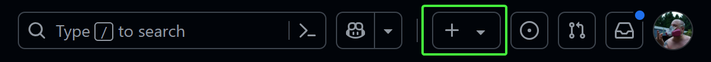
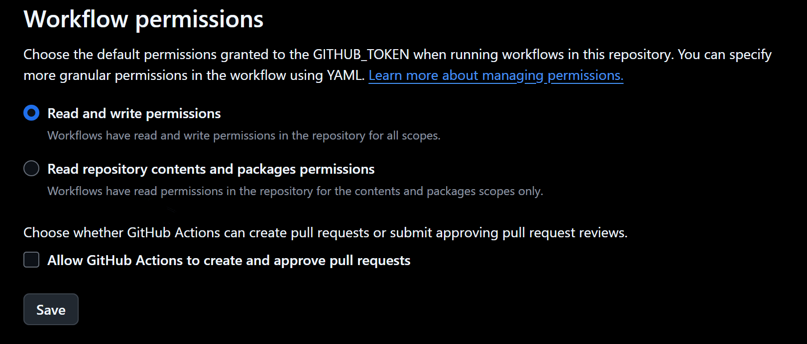
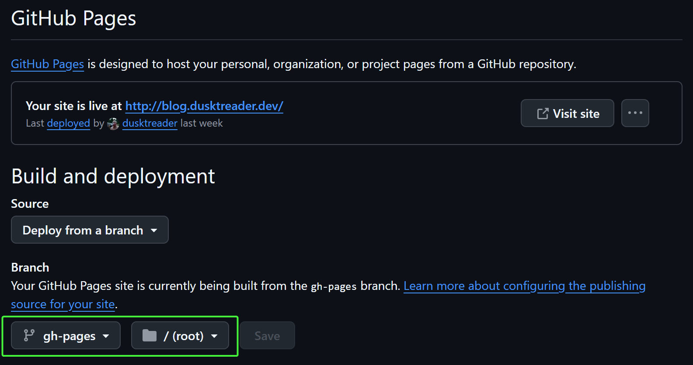
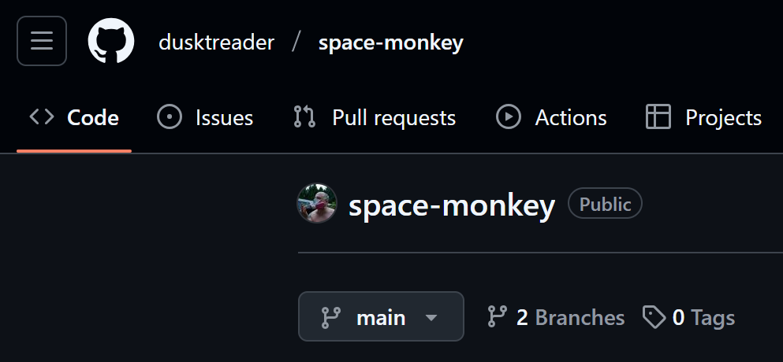
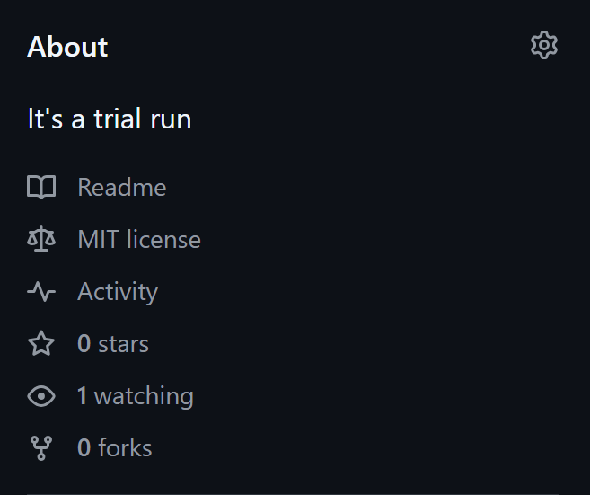
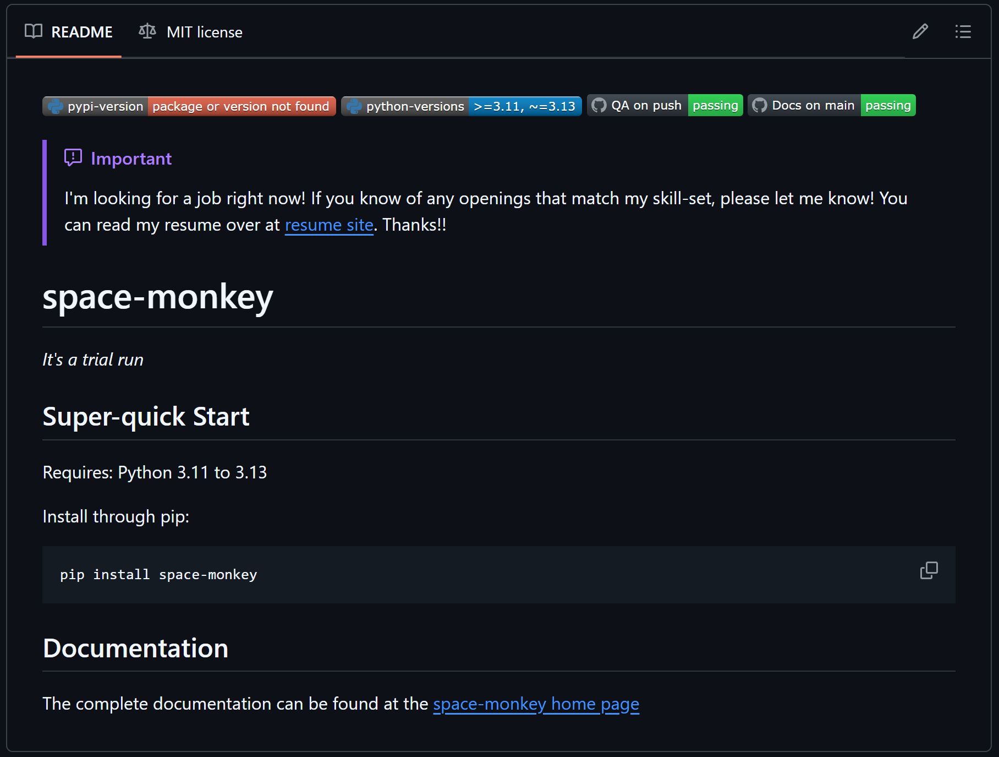
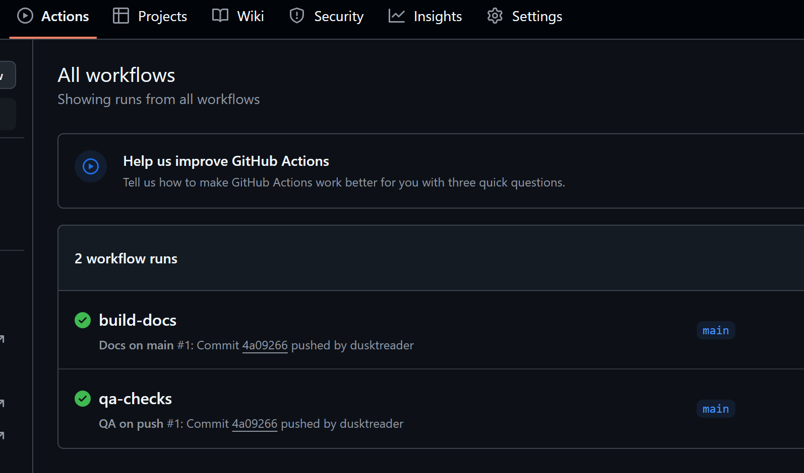
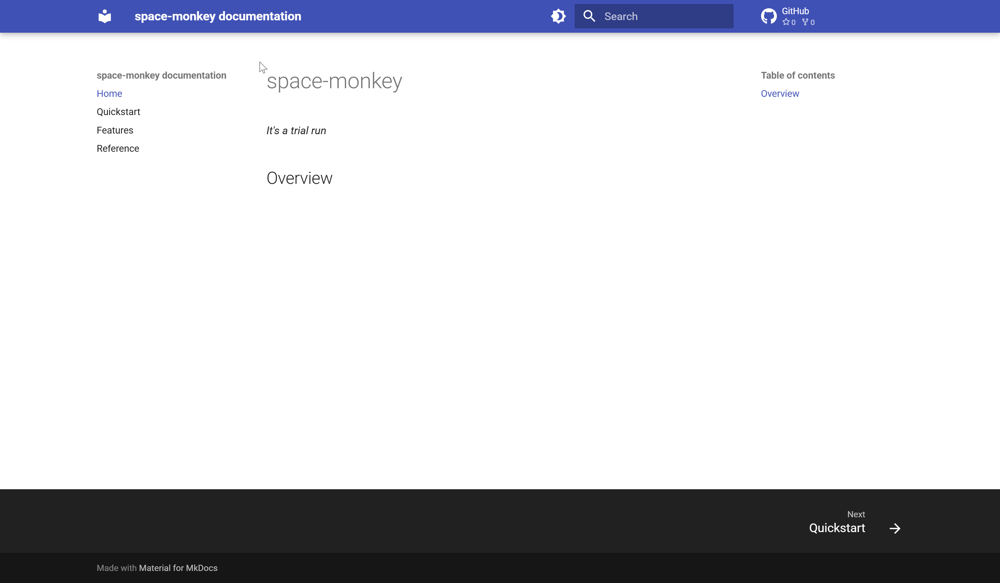

Bootstrapping Python projects with copier
TLDR
I used copier to create a python project
template that includes logic to deploy the project to GitHub.
I tend to create a lot of Python projects of various sizes. In the past few weeks, this has been even more frequent.
Just a few days ago, I started a new project called drivel. It is a
CLI and Python package that generates fun
metasyntactic names (think foo, bar, baz) to use in my
code. You can read more about it in the drivel docs if you want to learn more.
When I went to start this project, I did what I usually do. I copied one of my other projects to a new directory and started ripping stuff out, renaming things, and just generally futzing around until I had the scaffolding for my new project. This isn't hard work, but it always ends up taking a lot longer than I expect.
There are a lot of conventions that I've gotten attached to in my projects over the years. And, while it's not that hard to just borrow things from past projects, it's boring work that cries out to be automated.
So, I decided to create a project template that would allow me to do all this in just a matter of seconds.
Open to work
I'm looking for a job right now! If you know of any openings that match my skill-set, please let me know! You can read my resume over at my cv site. Thanks!
A case study
As I go through this article, I'm going to use an imaginary project as a case study. I'm calling it space-monkey,
because it's all about doing an exploratory trial run. Just like the
monkeys and apes that were sent into orbit before humans,
this project will be used to explore and test my project template.
The boring stuff
Before I get into how I actually built out the template, I want to take some time going over the reasons why the projects I produce from this template are the way they are. To do that, I need to go over my personal philosophy for setting up Python projects. This might not be that interesting to you. If so, feel free to skip ahead to the fun stuff.
There are some basic essentials that I like to have in my Python projects. These come in three flavors:
- Baseline requirements for a good project
- Ergonomics to make the project nice to work on
- Processes to make the project ready to go
Let's look at each one in a little detail.
Baseline requirements
I am kind of a stickler for a few baseline requirements that I have for my projects. Even for small projects, I like to make sure that requirements are met so I don't feel...icky working in my own code.
Here are the requirements that I've settled on over the years of writing Python projects:
- A decent
README.md - A
LICENSE.mdfile - A
CHANGELOG.md - A
pyproject.toml - Good project structure
- Docs
Each one of these requirements is born of past experiences working on Python projects. Along the way, I've learned some best practices and definitely developed some rather opinionated preferences for each. As I walk through these, please keep in mind that these are my opinions and preferences for my own projects. I don't think it's gospel; it's just what I like.
README.md
I've become convinced that Markdown is the best format for writing documentation at every level. I used to be pretty attached to reStructuredText (or RST), and it is a very powerful spec for writing technical documentation. But it has some serious drawbacks. For one, the syntax is far more esoteric. Also, working with the Sphinx documentation engine is not very fun. Overall, Markdown is just better. It doesn't come out-of-the-box with all the powerful features available with Sphinx and reStructuredText, but I've found that using Markdown with the extensions provided by mkdocs-material provides what I need and makes producing nice looking documentation a breeze.
So, I usually start with a README.md with a few essential elements:
- A project summary
- A "Super-quick start" section that briefly explains how to install the project.
- For a CLI or similar tool, a brief demonstration of how to run it
- A link to the documentation page
That's pretty much it. For smaller projects, I've leaned on the README to document the whole project. However, with mkdocs-material and GitHub Pages, it's so easy to stand up a docs site that I usually do that for even small projects.
LICENSE.md
For any project that you are going to host on a public GitHub repository, you need to have a software license. The GitHub docs offer a good explanation:
without a license, the default copyright laws apply, meaning that you retain all rights to your source code and no one may reproduce, distribute, or create derivative works from your work.
Another good reason to have a license is to make sure that you can't be held liable for misuse of your software or its failure in any situation.
As a rule, I prefer a very permissive license and use the MIT License
But, why make it a Markdown file and not not just LICENSE without an extension? Well, I usually use just a little
bit of markup in the file. More importantly, though, it signals to the OS and users that the file contains text and
should be opened with a text viewer/editor.
CHANGELOG.md
I used to be pretty lax with CHANGELOGs, but after reading keep a changelog, I realized that it's a pretty important element of an open-source software project.
Since I started including them, I've found that they are extremely useful for other people who want to learn about how your project has evolved over time. More importantly, it helps identify when significant changes (like dropping version support) came to be. Now, when I'm reading up on a project without a changelog, I get pretty grumpy.
Structure
This is so subjective. I've also been through many iterations of different structures with pretty strong opinions on
each one that I adopted. I used to be pretty adamant about using a "flat layout", but these days I've adopted the
src layout. In the end, the deciding
factor was that uv prefers the "src layout", and I've been using uv a lot lately.
So, my basic project structure looks like:
space-monkey/
└── .github/
├── workflows/
│ ├── deploy.yml
│ ├── docs.yml
│ └── main.yml
├── docs/
│ ├── source/
│ │ ├── features.md
│ │ ├── index.md
│ │ ├── quickstart.md
│ │ └── reference.md
│ └── mkdocs.yaml
├── src/
│ └── space_monkey/
│ ├── __init__.py
│ ├── main.py
│ └── py.typed
└── tests/
├── __init__.py
├── conftest.py
└── test_main.py
Note that this structure includes a tests directory that includes a full suite of unit tests and integration tests
when they are appropriate. I use pytest to run my tests--it's really just the
best option out there.
Documentation
As I mentioned in the README.md section, I usually put the bulk of my documentation in a static site hosted on GitHub pages and generated by mkdocs-material. It's really easy, and it results in a nice docs site that is searchable, themed, and familiar.
In fact, this blog itself is a GitHub Pages site built with mkdocs-material!
At a minimum, I like my docs to include an overview of the project, a good description of usage, a full explanation of the features, examples, and a reference section that is built from the docstrings in the project.
Ergonomics
Beyond the baseline requirements, I like to add some elements to my projects that make them nice to work on. I love good tools that are pleasure to use, so I'm always looking for cool things I can bring into my projects to make them more fun to work on. There are 3 core elements to all my projects that improve the ergonomics. These include:
- A
Makefile uvsupport- GitHub actions
I'll explain a little about each one.
Makefile
There are a lot of alternatives
to make these days. So, why do I chose something so old? It
certainly isn't the syntax. Instead, it's because make comes pre-installed in most unix systems. So, it's nice to
use something that doesn't require an installation. That might not be a great reason, but I have a good Makefile
structure now, so I'm sticking with it for the time being.
My Makefile usually has these targets:
- test: run the test suite
- lint: run code linters
- types: run type-checkers
- qa: run all three of
test,lint, andtypes - format: run a code formatter
- docs: build the docs
- docs-serve: build the docs and run them in a local, auto-refreshing server
- clean: clean up all the cruft including cache files and build artifacts
- help: show available
maketargets
It's really convenient to just run make qa and see all the quality checks being applied.
uv
Like I said before, I've been using uv these days for all my new projects. It's really
fast and has most of the features I want in project management software for Python. Beyond that, though, it has
massive adoption in the Python community. I really believe this will become the standard for Python projects in the
coming years.
I used to be a die-hard supporter of poetry. I still like the project, but I've found
that uv is just nicer to use.
As a bonus, uv comes with built-in Python version management with a better API and faster execution times than
pyenv (which I used to use).
So, all my projects these days are configured for uv to manage them. Since uv doesn't have a build backend
yet, I fallback on using hatchling in my
pyproject.toml
GitHub Actions
It's really nice to take advantage of CI even in small projects. Having automated quality checks and deployments built right into a project really take it to the next level. I usually set up three GitHub actions for my projects:
- run qa checks on any pushed branch
- build & deploy docs on any merge to
main - deploy a new version of the package on any tag matching a semver format
Many of the projects I make end up getting deployed on PyPI, so the third of these actions is really nice to have. If the project won't be deployed as a package, I'll leave off the third one.
Processes
This might be the most boring of these boring parts. In general, when I'm starting a new project, I like to put it up
on GitHub right away. This allows me to work on the project from anywhere. Since I work from a rented office a few miles
down the road, it's nice to be able to just pull down the latest changes from GitHub directly instead of using
scp or rsync to move the
files around. So, to get a new project set up on GitHub, I do these steps:
- Initialize the git repo
- Host it on GitHub
- Set up a GitHub Page
None of these are interesting, but they are important steps, and (before the new project template) they were all done manually.
git init
That's the main command at the heart of setting up a new git repo locally. However, there's a few other things I like to
do. I like my first commit to have nothing in it but a README.md that contains nothing but the title of the
project. It's not really a fun thing to try to rebase the first commit in a git repo. So, having it be almost completely
empty means that I can use it as an immutable base for all future commits.
Once that's done, my next commit will contain all of the contents (minus cruft that make clean will remove) of the
project. Usually, I won't finalize this commit until I have the MVP
working. That often means making several temporary commits that all get squashed down into this one before I push it
anywhere.
To GitHub
This is just a matter of going to GitHub and clicking the + button to create a new repository:

Screenshot of the plus button
Then, there's the fun of setting the upstream git repository hosted on GitHub as the origin for the local git
repository. Once that's done, it's just a matter of pushing main to origin.
GitHub Pages
Finally, to publish the docs on GitHub pages, you have to change a few settings. First, you need to go to the settings
for your project and find the actions section on the left. Once there, scroll down and find "Workflow Permissions".
Then, change it to enable "Read and write permissions".

Screenshot of actions settings
Easier method
I discovered a little later that it's not necessary to set the Read and write permissions manually if you set the permissions inside of the GitHub action to build the docs like this:
Once that's done, while you are still in settings, the deployment branch needs to be selected. This is found under the
"Pages" section on the left. Then, the gh-pages branch and root folder needs to be selected. Any branch can be used
for deployment, but the actions-gh-pages action that I use builds the
docs in the gh-pages branch by default.

Screenshot of branch and folder selection
Note that you can't actually select the gh-pages branch unless it has been created already. The actions-gh-pages
action will do this automatically, but it must have completed successfully first. If it failed after that initial push,
it's probably because the "Read and write permissions" weren't enabled yet. It's easy to just re-run the action in that
case to build the docs.
Summing up the boring stuff
So, now I've described all the setup and scaffolding that I like to include in a Python project. Given all that is here, you can see why it takes a while to get everything into place for a new project. This really is the boring part of a new project. Nothing I've talked about yet is that creative or interesting.
Automating the boring stuff
There's a seminal book about Python called Automate the Boring Stuff with Python by Al Sweigart that operates on the premise that Python is a great language for automating boring tasks. While the template project that I built doesn't itself use much Python, the sentiment is a good one. The whole point of the template project and this article is how automation takes away the drudgery of setting up a new Python project. So, let's get into the fun part!
Template Engine Selection
There are a few project template engines out there including the most famous:
cookiecutter. I've used cookiecutter before, and it's...fine. However,
I've also found some sharp edges while using it.
Overall, I just wanted to try something new, so I reached for copier.
copier has a lot of cool features that are unique to it.
Really, though, I'm only interested in creating a template to automate setting up a new Python project. After reading
over the docs for a bit, I felt good about my selection and got to work.
Template variables
After examining a few of my old project, I identified 5 elements that are essential to a new Python project. With these
5 settings, I can bootstrap a new project that is customized and ready to go. These 5 elements can be defined by
template variables that copier learns by
asking you interactive questions to get the values. The 5 elements are:
project_nameproject_summarymodule_namepython_versionsdefault_python_version
I'll explain each one in more detail.
project_name
This will be the name of the project, the name of the folder that holds it, and the package name on PyPI. In our case
study, this is space-monkey.
I like my project_name to use kebab case for longer
names, and I like the to name to always be lowercase.
project_summary
This is a short description of what the project is and does. It's usually just a sentence long. I use this at the top of
the README.md, in the docs, in the pyproject.toml, and on the GitHub page for the project. For space-monkey, let's
use "It's a trial run" as the project_summary.
module_name
This is the name of the Python module from which any source code is imported. Often, this is the same as the
project_name. However, if the project_name has dashes in it, a Python module can't include those. Thus it should use
snake case. For space-monkey, the module_name
becomes space_monkey.
python_versions
These are the versions of Python that the project should support. This should be a consecutive list of Python versions
that the project's source code will work in. The full list is used in the GitHub action that runs tests and
type-checks on all branches. The range of versions is used in pyproject.toml to identify compatible Python versions
for the project.
default_python_version
This should identify the Python version that is used by default in the project. For example, the project might support
all the way back to Python 3.9, but I prefer to work in Python 3.13. This is the version that will get set in the
.python-version so that uv runs everything in Python 3.13 for space-monkey.
copier.yaml
Once I knew the key elements for the copier project, I could constrain the questions in the copier configuration
file named copier.yaml. This file sits at the root of the template project and defines everything copier needs to
know in order to generate a new project.
Basic questions
First, I needed to define the basic questions. So, I started pretty simply:
project_name:
type: str
help: What is the name of the project?
project_summary:
type: str
help: Provide a short summary of the project.
module_name:
type: str
help: What is the Python module name?
This was very straightforward. copier asks the question described by the help field and stores the answer provided by
the user in the template variable.
However, I realized there was an issue here. What if the user (me) enters the empty string as the project_name?
Since this will be used as the name of the folder to hold the project, it obviously must not be the empty string.
Additionally, as I said earlier, I want the project_name to be in "kebab" case and only include lowercase characters.
To make this possible, I used a copier validator. Fortunately, the copier.yaml file can include some jinja in it
to make things more dynamic. After setting up my validator, the project_name definition ended up looking
like this:
project_name:
type: str
help: What is the name of the project?
validator: |
{% if project_name|length < 4 or project_name|length > 40 %}
project_name must be between 4 and 40 characters
{% endif %}
{% if not (project_name | regex_search('^[a-z][a-z0-9\-]+$')) %}
project_name must start with a letter, followed one or more letters, digits or dashes (all lowercase).
{% endif %}
Notice that the validator item in the yaml is defined as a multiline string using the | operator. This is because
all jinja directives have to be in strings so that the file itself is still valid YAML. Read more in the
copier docs about these constraints.
Next, I wanted to also constrain the project_summary. I also wanted it to have a default value that was equivalent
to the project_name only in "snake_case" instead of "kebab-case". I ended up writing this definition as:
module_name:
type: str
help: What is the Python module name?
default: "{{ project_name.replace('-', '_') }}"
validator: |
{% if module_name|length < 4 or module_name|length > 40 %}
module_name must be between 4 and 40 characters
{% endif %}
{% if not (module_name | regex_search('^[a-z][a-z0-9_]+$')) %}
module_name must start with a letter, followed one or more letters, digits or underscores (all lowercase).
{% endif %}
I decided that I didn't care if the project_summary was empty, so I didn't add a validator for it.
Choices
For the python_versions question, I needed to define a set of choices that the user can choose from to limit the
answer for the supported versions of Python. This keeps the user from selecting a version of python that doesn't exist
or isn't supported any more:
python_versions:
type: str
default:
- "3.9"
- "3.10"
- "3.11"
- "3.12"
- "3.13"
multiselect: true
choices:
- "3.9"
- "3.10"
- "3.11"
- "3.12"
- "3.13"
This works by limiting the choices to Python 3.9 through 3.13. Because I enabled multiselect the user can select more
than one Python version to include. Additionally, I set the default to all available versions to just make things
easier.
If you have a discerning eye, you might notice a problem here. I will be using these Python versions in pyproject.toml
to identify what versions my project should work with. However (according to it's
specification) pyproject.toml can only
specify a range of versions if more than one must be supported. Thus, I could have an issue if the selected versions
were not consecutive. Choosing 3.10, 3.12, 3.13 while leaving out 3.11 would be problematic. To address this, I figured
out a validator that can handle this constraint:
python_versions:
type: str
help: What Python versions will be supported?
default:
- "3.9"
- "3.10"
- "3.11"
- "3.12"
- "3.13"
multiselect: true
choices:
- "3.9"
- "3.10"
- "3.11"
- "3.12"
- "3.13"
validator: |
{% set all_ver = ["3.9", "3.10", "3.11", "3.12", "3.13"] %}
{% if all_ver.index(python_versions[-1]) - all_ver.index(python_versions[0]) + 1 != python_versions|length %}
python_versions must be a consecutive list of versions
{% endif %}
Next, I needed to create a question for the default_python_version. Right away, it was clear that this had to be
constrained to be one of the values chosen for python_versions. Additionally, I wanted this to default to the latest
supported Python version from the selected list. To make this happen, I made default_python_version quite dynamic:
default_python_version:
type: str
help: What is the default Python version to use?
default: "{{python_versions[-1]}}"
choices: |
{% for ver in python_versions %}
- "{{ver}}"
{% endfor %}
With that, I'd finished defining the questions needed to define the 5 critical template variables needed for a new project.
Building out the project structure
copier uses Jinja to inject the values for the template variables it
gathers from the questionnaire into not only the contents of the project template files, but into their filenames as
well. To inject into files, the files must be of type .jinja.
Remember my directory structure that I laid out before? Well, now I need to convert some of those files into Jinja templates so that I can get the correct values into them. To fast-forward a bit, the file structure now looks like this:
{{project_name}}/
└── .github/
├── workflows/
│ ├── deploy.yml.jinja
│ ├── docs.yml.jinja
│ └── main.yml.jinja
├── docs/
│ ├── source/
│ │ ├── features.md
│ │ ├── index.md.jinja
│ │ ├── quickstart.md.jinja
│ │ └── reference.md.jinja
│ └── mkdocs.yaml.jinja
├── src/
│ └── {{module_name}}/
│ ├── __init__.py
│ ├── main.py
│ └── py.typed
└── tests/
├── __init__.py
├── conftest.py
└── test_main.py.jinja
Every file that has a .jinja extension needs to have one of the 5 values injected into it. Additionally, the root
folder should use the selected project_name, and the module in the src directory should use the module_name.
Making a templated file
To show how Jinja template variable injections work, check out the internals of one of the templated files:
name: QA on push
run-name: qa-checks
on:
push:
branches: [ main ]
pull_request:
branches: [ main ]
jobs:
test:
runs-on: ubuntu-latest
strategy:
matrix:
python-version:
{% for ver in python_versions -%}
- '{{ ver }}'
{% endfor %}
steps:
- name: Checkout repository
uses: actions/checkout@v4
- name: Install uv
uses: astral-sh/setup-uv@v5
- name: Install python
run: uv python install {{ "${{ matrix.python-version }}" }}
- name: Check Quality
run: make qa
- name: Upload coverage reports to Codecov
uses: codecov/codecov-action@v5
with:
files: ./.coverage.xml
token: {{ "${{ secrets.CODECOV_TOKEN }}" }}
if: {{ "${{ !cancelled() }}" }}
- name: Upload test results to Codecov
uses: codecov/test-results-action@v1
with:
token: {{ "${{ secrets.CODECOV_TOKEN }}" }}
files: ./.junit.xml
if: {{ "${{ !cancelled() }}" }}
There's a few interesting things to take note of here. First, you can see that we are using the python_versions from
before to tell the GitHub action the matrix of versions to use in the test runs. It will create a separate run of the
test job for every version that was selected before.
Note down in the "Install python" step, there's something wild going on. In a vanilla GitHub action YAML file, this section would look like:
However, because it's a Jinja file now, double curly braces mean something special. Consequently, we need to escape the existing double curly braces. The Jinja way to do this is to make the original double curly expression a string and surround it again with double curlies. It's ugly, but it gets the job done:
Creating a template folder
By default, copier expects the templated project files to live in the same directory as copier.yaml. However,
because I have lots of other files that I want as a part of my template project, that wasn't going to work for me.
Fortunately, copier allows you to identify a different
subdirectory that holds your template. So, I
packaged up the whole project structure in a template subdirectory and updated my copier.yaml file to include a
subdirectory section like this:
Generating a new project
Now that everything is in place, it was time to generate a new project. So, I kicked off copier with the following command:
Basically, I was telling copier to create the new project using the template defined in the current directory.
Additionally, I wanted the new project to be created in the parent of my template project. Thus, the new project live in
a sibling folder of my template project's root.
Next, I ran through the questionnaire as follows:
🎤 What is the name of the project?
space-monkey
🎤 Provide a short summary of the project.
It's a trial run
🎤 What is the Python module name?
space_monkey
🎤 What Python versions will be supported?
done (3 selections)
🎤 What is the default Python version to use?
3.13
Copying from template version 0.0.0.post3.dev0+c69bc53
create space-monkey
create space-monkey/.python-version
create space-monkey/src
create space-monkey/src/space_monkey
create space-monkey/src/space_monkey/main.py
create space-monkey/src/space_monkey/__init__.py
create space-monkey/src/space_monkey/py.typed
create space-monkey/.gitignore
create space-monkey/tests
create space-monkey/tests/test_main.py
create space-monkey/tests/conftest.py
create space-monkey/tests/__init__.py
create space-monkey/Makefile
create space-monkey/CHANGELOG.md
create space-monkey/docs
create space-monkey/docs/mkdocs.yaml
create space-monkey/docs/source
create space-monkey/docs/source/features.md
create space-monkey/docs/source/index.md
create space-monkey/docs/source/reference.md
create space-monkey/docs/source/quickstart.md
create space-monkey/.github
create space-monkey/.github/workflows
create space-monkey/.github/workflows/deploy.yml
create space-monkey/.github/workflows/main.yml
create space-monkey/.github/workflows/docs.yml
create space-monkey/README.md
create space-monkey/LICENSE.md
create space-monkey/pyproject.toml
GREAT! It worked! Now I have a new Python project that includes all the scaffolding I like to have, and it's ready to build on.
However, this doesn't fix the pain of having to set up git and GitHub. I still would have to do those manual steps to complete the process.
So, I decided to investigate if I those steps could be automated as well.
SPOILER ALERT
They could be automated!
Automating GitHub Deployment with Tasks
With the Python project setup all automated, I needed to find out what I could do about automating the manual steps that are needed to roll the project out to GitHub. Remember that in the Processes section, I described 3 manual steps that I needed to perform in order to get a new project up on GitHub:
- Initialize the git repo
- Host it on GitHub
- Set up a GitHub Page
All these steps happen after the project is functional in its MVP form and ready to make public. So, I dug deeper into
copier to see what it offered for automating steps like this.
It turns out that copier supports tasks that run after
the project is generated. This fit my needs perfectly! However, in reading the docs on _tasks, something pretty
important jumped out:
Copier templates can use dangerous features that allow arbitrary code execution:
- Jinja extensions
- Migrations
- Tasks
Therefore, these features are disabled by default and Copier will raise an error (and exit from the CLI with code 4) when they are found in a template. In this case, please verify that no malicious code gets executed by any of the used features. When you're sufficiently confident or willing to take the risk, set unsafe=True or pass the CLI switch --UNSAFE or --trust.
This sounds pretty scary, BUT! I am building this project template for my own use. I think I can trust executable
code that I wrote myself--though sometimes I wonder! All I needed to add to take advantage of the _tasks directive was
a --trust flag in the copier command:
With that handled, I worked on my tasks next.
Task 1: Make sure the project works
I decided that it would be really nice to make sure that the project is actually working as expected before I pulbished
it on GitHub. Since I already added commands for linting, unit tests, and type-checks to my Makefile, I could verify
that the basics in the project work with a single command: make qa. I added this to the _tasks section with a single
command:
Notice that this command sets the working directory to the project_name. That meant that this command is actually
executed in the generated project. I don't need to make the directory path relative to the path where I run the
command because I have already directed copier to execute the template in the parent directory of the template
project (remember the ..). Thus, the command will be executed exactly where I wanted. I took the new task for a spin:
🎤 What is the name of the project?
space-monkey
🎤 Provide a short summary of the project.
It's a trial run
🎤 What is the Python module name?
space_monkey
🎤 What Python versions will be supported?
done (3 selections)
🎤 What is the default Python version to use?
3.13
Copying from template version 0.0.0.post3.dev0+4a481f3
...
> Running task 1 of 1: make qa
make[1]: Entering directory '/home/dusktreader/git-repos/personal/space-monkey'
uv run pytest
...
tests/test_main.py . [100%]
...
uv run ruff check src/space_monkey tests
All checks passed!
uv run mypy src/space_monkey tests --pretty
uv run basedpyright src/space_monkey tests
Success: no issues found in 5 source files
0 errors, 0 warnings, 0 notes
echo "All quality checks pass!"
All quality checks pass!
make[1]: Leaving directory '/home/dusktreader/git-repos/personal/space-monkey'
I omitted some output (...) here to make save some space. Still, you can see that it ran my QA checks after generating the project and all of the checks passed. Great! Now I'm confident that the generated project had a baseline of functinoality.
Task 2-6: Initialize the git repository
The next series of tasks covered the manual steps I described to initialize the git repository. These steps are really easy to define in tasks:
- working_directory: "{{ project_name }}"
command: "git init ."
- working_directory: "{{ project_name }}"
command: "git add README.md"
- working_directory: "{{ project_name }}"
command: "git commit -m 'Initial Commit'"
- working_directory: "{{ project_name }}"
command: "git add ."
- working_directory: "{{ project_name }}"
command: "git commit -m 'feat: Bootstrapped the {{ project_name }} project'"
There's not much to comment on here other than the nicety of including the templated project_name value in the first
git commit message. The output from this steps (with some stuff removed) looked like this:
> Running task 2 of 6: git init .
Initialized empty Git repository in /home/dusktreader/git-repos/personal/space-monkey/.git/
> Running task 3 of 6: git add README.md
> Running task 4 of 6: git commit -m 'Initial Commit'
[main (root-commit) 4106d13] Initial Commit
1 file changed, 29 insertions(+)
create mode 100644 README.md
> Running task 5 of 6: git add .
> Running task 6 of 6: git commit -m 'feat: Bootstrapped the space-monke`y project'
[main d830fcb] feat: Bootstrapped the space-monkey project
21 files changed, 1339 insertions(+)
...
Now, I was really getting somewhere on automating boring steps!
Task 7 & 8: Create the project on GitHub
For the next two steps, I needed to be able to interact with GitHub from the command-line. Fortunately, GitHub had a very powerful CLI available that can do it all! I just had to install it. The installation wasn't super clean, but after following the instructions in the docs, I had GitHub CLI up and running. Next, I needed to login through the CLI to my GitHub account:
After following the steps to complete device authorization flow, I was fully logged in.
Next, I defined the steps to create the project on GitHub and push my main branch to the new origin.
- working_directory: "{{ project_name }}"
command: "gh repo create --description=\"{{ project_summary }}\" --source=. --public {{ project_name }}"
- working_directory: "{{ project_name }}"
command: "git push -u origin main"
The create command is really straightforward, and it's nice that I could use the project_summary as the project
description on GitHub. Executing the tasks looked like this:
> Running task 7 of 8: gh repo create --description="It's a trial run" --source=. --public space-monkey
2025/04/06 11:28:35.534717 cmd_run.go:1285: WARNING: cannot start document portal: dial unix /run/user/1000/bus: connect: connection refused
✓ Created repository dusktreader/space-monkey on GitHub
✓ Added remote git@github.com:dusktreader/space-monkey.git
> Running task 8 of 8: git push -u origin main
Enumerating objects: 30, done.
Counting objects: 100% (30/30), done.
Delta compression using up to 8 threads
Compressing objects: 100% (23/23), done.
Writing objects: 100% (30/30), 30.07 KiB | 2.15 MiB/s, done.
Total 30 (delta 1), reused 0 (delta 0), pack-reused 0 (from 0)
remote: Resolving deltas: 100% (1/1), done.
To github.com:dusktreader/space-monkey.git
* [new branch] main -> main
branch 'main' set up to track 'origin/main'.
When I went to check the repo on GitHub, I could see that it was all set up!

space-monkey now on GitHub!

about section has the summary

space-monkey README
And, when I checked the Actions, I verified that the docs build succeeded as well:

space-monkey build-docs action
However, the GitHub Pages site for the docs was not built yet, because it wasn't configured as I described in the GitHub Pages section. So, I needed a few more actions to make that happen.
Task 9-11: Publish the GitHub Page
Figuring out how to configure my repo to publish the GitHub Pages site took some digging. I found that this functionality isn't actually built in to the GitHub CLI directly. However, the CLI does allow you to call any API endpoint provided by GitHub! Once I learned that, it was only a matter of finding the endpoint and learning how to call it. The complete CLI command looked like this (I've broken it up into several lines to make it easier to read):
gh api \
--method=POST \
-H "Accept: application/vnd.github+json" \
"/repos/dusktreader/so-dumb/pages" \
-f "source[branch]=gh-pages" \
-f "source[path]=/" \
-f "build_type=legacy"
It worked, but I quickly realized there was a problem. This command will only work after the GitHub action to build
the docs is completed. That action creates a new branch in the repo called gh-pages where the built docs are staged.
If you try to run the GitHub API command before that branch exists, it will fail.
So, I needed to make sure that the build-docs action completed before I ran the command. That took even more
digging, but I was able to figure out how to do it in two steps:
- Wait for the
build-docsaction to start - Once it's started, wait for it to complete
After refining those steps into tasks, my YAML looked like this:
- working_directory: "{{ project_name }}"
command: >
while [ -z "$(gh run list --json databaseId,name | jq '.[] | select(.name == "build-docs")')" ]; do
echo "Waiting for docs build action to start" && sleep 1;
done
- working_directory: "{{ project_name }}"
command: >
gh run list --json databaseId,name
| jq '.[] | select(.name == "build-docs")'
| jq '.databaseId'
| xargs gh run watch --exit-status
- working_directory: "{{ project_name }}"
command: >
gh api
--silent
--method=POST
-H "Accept: application/vnd.github+json"
"/repos/dusktreader/{{ project_name }}/pages"
-f "source[branch]=gh-pages"
-f "source[path]=/"
-f "build_type=legacy"
Once I had the tasks in place, running it produced this output:
> Running task 9 of 10: while [ -z "$(gh run list --json databaseId,name | jq '.[] | select(.name == "build-docs")')" ]; do
echo "Waiting for docs build action to start" && sleep 1;
done
Waiting for docs build action to start
Waiting for docs build action to start
Waiting for docs build action to start
> Running task 10 of 10: gh run list --json databaseId,name | jq '.[] | select(.name == "build-docs")' | jq '.databaseId' | xargs gh run watch --exit-status
Refreshing run status every 3 seconds. Press Ctrl+C to quit.
✓ main build-docs · 14295750274
Triggered via push less than a minute ago
JOBS
✓ build in 12s (ID 40062668601)
✓ Set up job
✓ Checkout repository
✓ Install uv
✓ Set up Python
✓ Build Documentation
✓ Deploy documentation
✓ Post Install uv
✓ Post Checkout repository
✓ Complete job
✓ Run build-docs (14295750274) completed with 'success'
> Running task 11 of 11: gh api --method=POST -H "Accept: application/vnd.github+json" "/repos/dusktreader/space-monkey/pages" -f "source[branch]=gh-pages" -f "source[path]=/" -f "build_type=legacy"
That's it! My project is now available on GitHub and the docs page is also built...well, not yet actually. The page wasn't deployed yet because the final GitHub action named "pages build and deployment" had to finish first. So, I decided to add one last finishing touch.
Task 12-14: Wrapping it up
For this final step, I just needed to add another task to wait for the page deployment to complete. I also wanted to add a message at the end confirming that the tasks completed successfully and include a URL to the new GitHub repo so that I could open it with a click. The final tasks looked like this:
- working_directory: "{{ project_name }}"
command: >
while [ -z "$(gh run list --json databaseId,name | jq '.[] | select(.name == "pages build and deployment")')" ]; do
echo "Waiting for page deploy action to start" && sleep 1;
done
- working_directory: "{{ project_name }}"
command: >
gh run list --json databaseId,name
| jq '.[] | select(.name == "pages build and deployment")'
| jq '.databaseId'
| xargs gh run watch --exit-status
- working_directory: "{{ project_name }}"
command: >
echo "Finished bootstrapping {{ project_name }}!" &&
echo "Check it out at https://github.com/dusktreader/{{ project_name }}"
This produced output from copier that looked like this:
> Running task 12 of 14: while [ -z "$(gh run list --json databaseId,name | jq '.[] | select(.name == "pages build and deployment")')" ]; do
echo "Waiting for page deploy action to start" && sleep 1;
done
Waiting for docs build action to start
Waiting for docs build action to start
Waiting for docs build action to start
> Running task 13 of 14: gh run list --json databaseId,name | jq '.[] | select(.name == "pages build and deployment")' | jq '.databaseId' | xargs gh run watch --exit-status
Refreshing run status every 3 seconds. Press Ctrl+C to quit.
✓ gh-pages pages build and deployment · 14295984823
Triggered via dynamic less than a minute ago
JOBS
✓ build in 7s (ID 40063197951)
✓ Set up job
✓ Checkout
✓ Upload artifact
✓ Post Checkout
✓ Complete job
✓ report-build-status in 3s (ID 40063199711)
✓ Set up job
✓ Report Build Status
✓ Complete job
✓ deploy in 10s (ID 40063199712)
✓ Set up job
✓ Deploy to GitHub Pages
✓ Complete job
✓ Run pages build and deployment (14295984823) completed with 'success'
> Running task 14 of 14: echo "Finished bootstrapping space-monkey!" && echo "Check it out at https://github.com/dusktreader/space-monkey"
Finished bootstrapping space-monkey!
Check it out at https://github.com/dusktreader/space-monkey
Excellent! I clicked on the URL at the end and checked out the docs:

space-monkey docs page!
There they were! After all that work, my template project was ready to stamp out new Python projects!
Conclusion
My template project was pretty much complete at this point. It could produce a mostly empty Python project, but all of the scaffolding was complete and the project was published on GitHub.
Running the whole process took just over a minute:
I am really happy with how this turned out. Still, I don't think the template project is 100% done yet. In particular, there are a few things I'd like to improve in it:
- Cleaning up some of the output so it's not so noisy
- Encapsulating the GitHub CLI commands in scripts to make the YAML more concise
- Figuring out how to seed the list of python versions with a reusable variable
- Making the GitHub user account a question so other people can use the template more easily
- Adding some optional components so I can bootstrap CLI apps vs API apps
- Configuring GitHub to set the URL of the docs page in the "About" section
This is a solid start, though, and definitely a tool that I will find really useful for future Python projects.
If you are interested in the nitty-gritty details of the template, please check out my dusky-clone project on GitHub. Comments, issues, and PRs are always welcome.
Before I take off, I'd like to thank the maintiners
of copier for creating such a great template builder. It really was a joy to work with!
So, what do you think? Let me know below in the comments.
Thanks for reading!